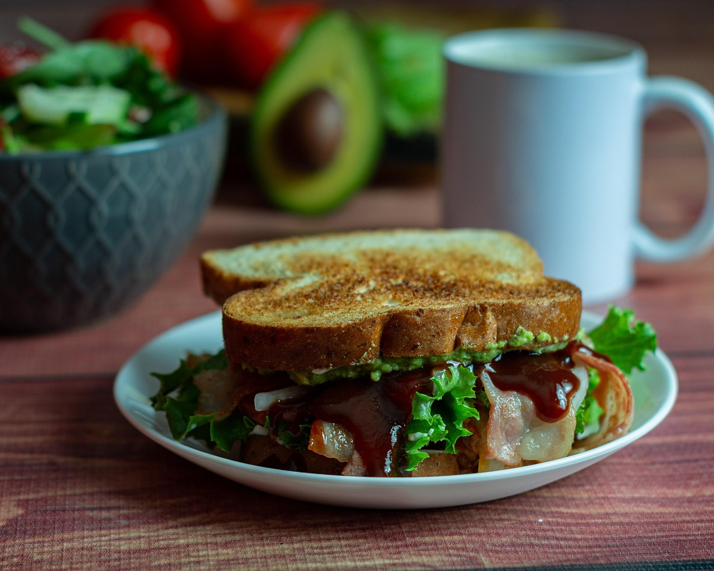

Simple BLT
Home

Image origin Here
Simple BLT
Ingredients
- 4 slices of bacon
- 2 leaves of iceberg lettuce
- 2 tomatoes, sliced to preference
- 2 toasted slices of bread
- 1 tablespoon of mayonnaise
Step-By-Step
- Gather all of the ingredients you've prepared.
- Cook bacon until evenly browned, and drain excess grease by laying slices on a paper towel.
- Spread the mayonnaise on one slice of bread, and layer the ingredients on the other.
- Close the sandwich and serve.
- Prep Time: 5 minutes
- Cook Time 10 minutes
- Total Time: 15 minutes
- Servings: 1